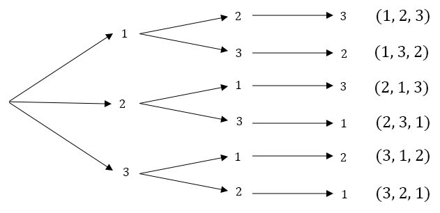
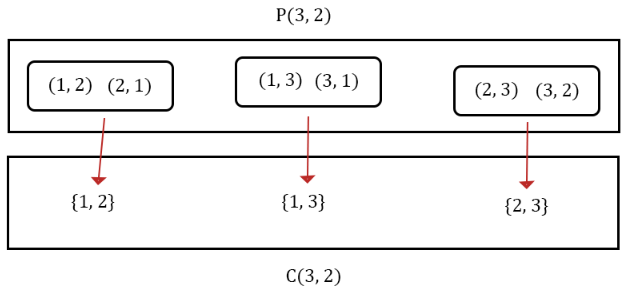

Counting¶
Size of a set¶
The set \(A = \{5,6\}\) has two elements. The is notation for this is \(n(A) = 2\). \(n\) is a function that takes a set and outputs the number of elements in it:
Let the sample space be \(S = \{1,2,3,4,5,6\}\). Since \(A=\{5,6\}\), \(A^C= \{1,2,3,4\}\) and \(n(A^C)=4\). There is a formula for the size of the complement.
The size of the complement of a set is the size of the sample space minus the size of the set.
S = {1,2,3,4,5,6}
A = {5,6}
# Use len() to take the size of a set
print(f"The length of S is {len(S)}")
print(f"len(S-A) = len(S) - len(A)? {len(S.difference(A)) == len(S) - len(A)}")
# This isn't true in general, only when S is the sample space.
B = {10, 12}
print(f"If B is not a subset of S does it still work? {len(S.difference(B)) == len(S) - len(B)}")
The length of S is 6
len(S-A) = len(S) - len(A)? True
If B is not a subset of S does it still work? False
Principle of Inclusion-Exclusion¶
We define sets \(A\), \(B\) and notice that \(n(A \cup B) \not= n(A) + n(B)\)
A = {3,4,5}
B = {4,5,6}
print(f"{len(A.union(B))} is the size of the union")
print(f"{len(A)+len(B)} is the len(A) + len(B)")
print("These are not equal!")
4 is the size of the union
6 is the len(A) + len(B)
These are not equal!
There is a formula for the size of the union of two sets. This is called the principle of inclusion-exclusion (PIE).
We subtract \(n(A \cap B)\) because the elements of the intersection are counted twice - once in \(n(A)\), and once in \(n(B)\). See that \(A \cap B = \{4,5\}\) gets counted in both \(A= \{3,4,5\}\) and \(B=\{4,5,6\}\). Using PIE we see that \(n(A \cup B) = 3 + 3 - 2 = 4\)
len(A.union(B)) == len(A) + len(B) - len(A.intersection(B))
True
Mutually Exclusive Sets¶
If \(A\) and \(B\) have no elements in common then \(A \cap B = \emptyset\) and the sets are said to be mutually exclusive.
Since \(n(A\cap B) = 0\) the principle of inclusion-exclusion allows us to add up the sizes of the sets.
3 or more sets¶
The principle of inclusion-exclusion for three sets can be determined using our result for two sets.
Then we expand \(n(B\cup C)\) and \(n((A \cap B) \cup (B \cap C))\) using PIE to get the following:
Generally, we add the sizes of the individual sets, subtract the sizes of combinations of two sets, add the sizes of combinations of three sets, subtract the size of combinations of four sets, and add the size of combinations of five sets, etc. So this formula works for the union of arbitrary numbers of sets.
Multiplication Principle¶
Tree diagrams¶
I have a red shirt and a blue shirt.
I have a green hat, a pink hat, and a black hat.
How many different shirt/hat combinations can I wear?
We can make a tree diagram to find that there are 6 combinations.

Cartesian product¶
The set \(\{(a,b)|a \in A \text{ and } b \in B\}\) is the set of ordered pairs of elements from \(A\) and \(B\). It has a special name, the cartesian product. The notation for this is \(A \times B\).
The size of the cartesian product is the product of the sizes of the sets.
In our previous example with shirts and hats we can think of the set of shirts \(S\) and hats \(H\), and the set of combinations as the set \(S \times H\), so there are \(n(S) \times n(H) = 3 \cdot 2 = 6\) combinations.
Many independent choices¶
If we are making \(n\) independent selections with \(a_1, a_2, ..., a_n\) options for our selections the total number of choices is the product of the number of choices for each selection.
You can think about this as the cartesian product of many sets.
There are two options for each flip of a coin. The number of possible sequences of \(4\) coin flips is \(\prod_{k=1}^{4} 2 = 2^4\).
# Find all sequences of coin flips of length n. We use a list comprehension to generate the new sequences.
def coin_flips(n):
sequences = ['']
for i in range(n):
sequences = [seq + 'H' for seq in sequences] + [seq + 'T' for seq in sequences]
return sequences
print(f"There are {len(coin_flips(4))} sequences")
print(f"The combinations are: \n {coin_flips(4)}")
There are 16 sequences
The combinations are:
['HHHH', 'THHH', 'HTHH', 'TTHH', 'HHTH', 'THTH', 'HTTH', 'TTTH', 'HHHT', 'THHT', 'HTHT', 'TTHT', 'HHTT', 'THTT', 'HTTT', 'TTTT']
It is important that our choices are independent. If I have three shirts and I want to wear two shirts at the same time, I can’t wear the same shirt twice. So with my red and blue shirts I can have pairs (red, blue), (blue, red) but not (red, red) or (blue, blue). Let’s investigate this.
Permutations¶
Permutations rearrange elements of a set into ordered outcomes. How many ways can we order the elements of the set \(A = \{1,2,3\}\)? Let’s draw a tree diagram.

There are three options for our first selection, two options for our second selection, and one option for our third selection. The multiplication principle gives us 6 permutations of the set \(\{1,2,3\}\). Generally if \(n(A) = m\) there are \(m \times (m-1) \times ... \times 2 \times 1 = m!\) permutations of the set \(A\).
Sometimes permutations are more obvious than others. The possible outcomes in a three person race are obviously a permutation because we are ordering a set. But order isn’t always involved. How many ways can I give three candy bars to my three friends? I have \(3\) options for the first candy bar, \(2\) options for the second, and \(1\) option for the third. If I gave away all the candy bars at the same time there is no sense of “ordering” but still this is a permutation.
import itertools
# We can use the itertools.permutations() function from the Python standard library
permutationsGenerator = itertools.permutations([1,2,3])
# The return type of itertools.permutations() is a generator.
# Python will not store all the values in memory, but instead will generate them one at a time.
print(f"The return type of itertools.permutations is {type(permutationsGenerator)}")
# You can use next() to get the next permutation.
print(f"Permutation 1 is {next(permutationsGenerator)}")
print(f"Permutation 2 is {next(permutationsGenerator)}")
# We can convert the generator to a list and print them.
permutations = list(permutationsGenerator)
print(f"The permutations of [1,2,3] are: \n {permutations}")
# We can write our own function too.
def generatePermutations(nums: list[int]) -> list[list[int]]:
if len(nums) == 0:
return [[]]
else:
permutations = []
for i in range(len(nums)):
permutations += [[nums[i]] + p for p in generatePermutations(nums[:i] + nums[i+1:])]
return permutations
The return type of itertools.permutations is <class 'itertools.permutations'>
Permutation 1 is (1, 2, 3)
Permutation 2 is (1, 3, 2)
The permutations of [1,2,3] are:
[(2, 1, 3), (2, 3, 1), (3, 1, 2), (3, 2, 1)]
---------------------------------------------------------------------------
TypeError Traceback (most recent call last)
/tmp/ipykernel_1647/223144171.py in <module>
17
18 # We can write our own function too.
---> 19 def generatePermutations(nums: list[int]) -> list[list[int]]:
20 if len(nums) == 0:
21 return [[]]
TypeError: 'type' object is not subscriptable
k-permutations of n elements¶
In a \(10\) person race how many possible outcomes are there for the top \(3\)?
There are \(10\) options for first place, \(9\) options for second place, and \(8\) options for third place. The answer is \(10 \cdot 9 \cdot 8 = 720\). The general formula for the top \(k\) racers in an \(n\) person race is:
The notation for this is \(P(n,k) = \frac{n!}{(n-k)!}\). \(P(n,k)\) is pronounced “\(n\) permute \(k\)”.
# The second argument is the number of items to choose from.
permutations = itertools.permutations([1,2,3], 2)
print(f"2-permutations of 3 items: {list(permutations)}")
2-permutations of 3 items: [(1, 2), (1, 3), (2, 1), (2, 3), (3, 1), (3, 2)]
Combinations¶
How many ways can I pick \(2\) numbers from the set \(\{1,2,3\}\)? We have 3 options for the first person, 2 options for the second person, so the answer is \(6\)? Wrong, because this assumes that order is important. The order is not important so the pairs \((1,2)\) and \((2,1)\) are the same. This changes our answer to \(3\).

The difference between permutations and combinations is that combinations don’t have an order. So there are \(2\) permutations for every combination in the previous example. If we chose \(3\) numbers there are \(3! = 6\) permutations and \(1\) combination. In general we see that \(P(n,k) = C(n,k) \cdot k!\). Solving for \(C(n,k)\) we get:
# We use itertools.combinations()
combinations = itertools.combinations([1,2,3], 2)
print(f"2-combinations of 3 items: {list(combinations)}")
# We can also write our own function.
def combine(n, k):
if k == 0:
return [[]]
else:
return [p + [i] for i in range(k, n+1) for p in combine(i-1, k-1)]
2-combinations of 3 items: [(1, 2), (1, 3), (2, 3)]
Variations¶
Problems can involve several of the previous principles.
Piggies and markets¶
There is a set of \(9\) distinct pigs. Three go to the market, three go to Arby’s, and three go home. How many ways can this happen?
There are \(9 \choose 3\) ways to select the piggies for the market. After that selection is made there are \(6 \choose 3\) ways to select the piggies for Arby’s. The remaining three piggies go home. The answer is then:
There is a general principle at work here. If we divide a set into mutually exclusive subsets then the number on the top is the size of the set and the numbers on the bottom are the size of the subsets. Verify that this is true for dividing a set into two sets (hint: it is just the formula for combinations).
We can rephrase the piggies question as “How many ways can you rearrange the letters of ‘aaabbbccc’?” To see that these questions are the same let each position of the letter be a piggy and assign the market, Arby’s, and home to the letters a, b, and c. Select positions in groups of three to assign the letters to.
We love math problems¶
How many ways could I rank my 10 favorite math problems from a list of 20 and then do 5 of them? There are \(P(20,10)\) possible rankings of my top 10 problems. There are \(10 \choose 5\) ways to choose from the selected problems. The answer is then: